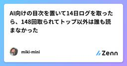
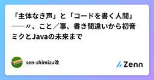

Zennの「AI」のフィード
フィード
Spotifyは2000万行のコードでエージェントをどう回しているか
Zennの「AI」のフィード
!本記事は Anthropic 公式チャンネルの動画「How Spotify runs agents across 20M+ lines of code, with Niklas Gustavsson」（26:11）の紹介と論評を目的としています。翻訳の全文掲載はしておらず、要点を抽出したうえで筆者の見解を添えたものです。元動画の網羅でも代替でもありません。関心を持たれた方は必ず元動画をご覧ください。話し手は Niklas Gustavsson、Spotify の VP of Engineering です。社内のエージェント基盤「Honk」を率いています。Spotify のエンジニ...
7時間前

60秒でKattoをClaudeに接続する（公式MCPサーバー）✂️
Zennの「AI」のフィード
🔗 この記事は katto.tech に最初に公開された記事の転載です（原文・正典）。KattoはAI動画クリップツールで、公式MCPサーバーを提供しています。つまりアプリを開かなくても使えます。一度Claudeに接続すれば、あとは自然な言葉で —「このYouTube動画のベストな場面をクリップして」— と頼むだけ。Kattoがダウンロード・文字起こし・スコアリングして、字幕付きの縦型クリップを生成し、バイラルスコア順に並べて返します。インストール不要、設定ファイルにAPIキーを貼る必要もありません。最初から最後まで、これがすべてです。▶ 60秒のデモを見る 60秒で接...
7時間前

AIが問いを立て直した ── 音声のズレを追って感じたLLMの進化
Zennの「AI」のフィード
目の前の症状から、データの生成経路へ。調査範囲が広がっていった!この記事の要点波形と音声が約0.5秒ずれる問題を、Codex上のGPT-6 Astraと調査したAIは調査の途中で「同期させる対象そのものが正しいのか」と問いを立て直した別リポジトリの変換処理をビルドして再現し、保存済み波形と全振幅値が一致した半年前に書いた「問いを立てるのは人間」という見方を、自分の経験から更新する 半年前に書いた「AIの視座」の、その後今年3月、「AIは問題を解くが、問いを立てない ── ３つのバグ修正で見えた『視座』の重要性」という記事を書いた。https://zenn.de...
7時間前

CopilotにApproveさせてAuto Mergeで開発を回す 〜自律開発ループの作り方〜
Zennの「AI」のフィード
はじめに2026年9月、GitHubから見逃せないアップデートが出ました。Copilot code reviewがPull Requestを「Approve」できるようになったというものです。Copilot code review can now approve pull requests（github.blog changelog / 2026-09-01）これまでCopilotのレビューは「コメント」や「変更のリクエスト」止まりで、正式なApproveはできませんでした。人間が最後にポチッと承認ボタンを押す必要があったわけです。ここが変わったことで、実装 → レビュ...
7時間前

開発環境を決める～【連載】実況パズルプログラミング
Zennの「AI」のフィード
前回は、okozeを始めた理由と、このプロジェクトを通して考えてみたいことを書きました。今回は、実際にokozeを作るための開発環境を決めます。 Webアプリケーションか、スタンドアロンアプリケーションか大きく分けると、次の2つの方法があります。Webアプリケーションスタンドアロンアプリケーションスタンドアロンアプリケーションなら、OSに直接アクセスできますし、Webプラットフォームによる制約も避けることができます。一方、今回のokozeにはWebアプリケーションにも魅力があります。複数のOS向けに別々のバージョンを用意しなくても、多くの環境で動かせる可能性がありま...
8時間前
Claude Code × Obsidianで「調査して終わり」にしない開発フローを作る
Zennの「AI」のフィード
はじめにこんにちは。最近は、Claude CodeなどのAIツールを、調査・実装・テスト・ドキュメント作成の補助として使うことが増えました。AIを使うことで、以前よりもかなり速くコードを書いたり、原因を調べたりできるようになっています。一方で、少し気になることもありました。AIに調べてもらって問題は解決したけれど、数週間後には「どうしてこの修正をしたんだっけ？」となる。ということです。AIが優秀になるほど、調査原因の特定実装案の作成テストコードの作成まで、一気に進められるようになります。便利なのですが、そのまま次のタスクへ進んでしまうと、せっかく経...
8時間前
Memorix 使ってハーネス浮気！ と思ったらもっと便利な使い方があった
Zennの「AI」のフィード
コーディングエージェント何使ってます？私はClaude Code使って、Ollama Cloud経由でGLMとかDeepseek使ってるタイプ。ある日、Opencode Goええやんって思って使おうとしたら、Claude Codeからつなぐのめんどい（ocgoとかですぐ繋がるけどさ）。せっかくだからOpencode v2使ったりしてたけどハーネス跨ぐと記憶がね。。体は（脳も）変わっても私との思い出は維持してほしい。というわけで、こんな人向けClaude CodeからOpencodeなどに乗り換えたいけどメモリ置いてけない！ハーネスを行き来したいけど文脈が分断してつらい！...
8時間前

AI向けの目次を置いて14日ログを取ったら、148回取られてトップ以外は誰も読まなかった
Zennの「AI」のフィード
※メニュー（llms.txt）は熱心に読むのに、目の前のテーブルは空のまま。奥の料理も手つかず。時計は15:00です美容系勤務独学初心者マリー・アントワネット系エンジニア目指してます！今回は AIが読んでくれるか分からない なら 2週間ログを取ればいいじゃない 👸🍰です。読了時間の目安：約 8〜10分!3行まとめAI向けの目次 llms.txt を置いて 14日間アクセスログを取った148回取得された。でも目次が案内している先は、トップページ以外どこも読まれなかったしかも 私の測定に交絡があり、133回は「llms.txtだから」ではなかった📌 この記事...
8時間前
AIコーディングの私のレビュー観点
Zennの「AI」のフィード
はじめに所属会社ではClaude Codeを使っており、私自身がゼロからコードを書くことはなくなりました。業務ではClaudeと協力しながらコーディングを進めており、レビューするときの私の観点を本記事にまとめます。 AIのコーディング成果物を確認する観点AIによるコーディングでAI自身でテストコードを実行して検証するため構文エラーになることはほとんどないです。CRUD処理やバリデーションなどよく使われる処理はベストプラクティスに基づいて作成してくれます。そのため、AIが上手くできない部分、問題になりやすい部分を人間が確認します。次に説明するのがAIのコーディング成果物の私の...
8時間前
Claude Code で一番高いリクエストは「さっきの続きやって」かもしれない
Zennの「AI」のフィード
Claude Code のプロンプトキャッシュが話題に出ていたので、公式ドキュメントを読んで整理しました。先に結論から書きます。長時間放置したセッションに戻ると、再開の 1 ターン目だけが突出して高い高いのは「トークンをたくさん使うから」ではない。同じトークンに乗る単価が変わるからFable 5.1 だと、キャッシュが生きているときと切れた直後で単価が 80 倍違うただし 2 ターン目からは元に戻る。ペナルティは 1 回きりサブスクなら 1 時間、API キー / Bedrock なら 5 分。Subagent はサブスクでも 5 分サブスクでも、プランの上限を超えてク...
8時間前

OpenAI API 入門 — API キーの取得から初回リクエストまで
Zennの「AI」のフィード
OpenAI API 入門 — API キーの取得から初回リクエストまで 概要本記事は、OpenAI API を初めて触るエンジニア向けのハンズオンです。アカウント作成から API キーの発行、環境構築、そして初回リクエストの送信までを、最短経路で一通り体験します。手元にターミナルと任意のエディタがあれば読み進められます。対象は「Web の管理画面は見たことがあるが、コードから LLM を叩いたことはない」という段階の方です。 環境OS: macOS / Linux / Windows いずれかPython 3.8 以上（本記事は Python で進めます。Node...
8時間前

【初心者向け】ChatGPTの音声モードでEC座談会をしてみた | EC-CUBE名古屋 vol.125
Zennの「AI」のフィード
この記事は「【初心者向け】ChatGPT の音声モードでEC座談会 | EC-CUBE名古屋 vol.125」勉強会の記録です。!この記事は、勉強会中の音声AIとの対話記録をもとに、参加者が内容を確認しながらAIの支援を受けて編集しています。個別の店舗名・商品名・人物名、および特定につながりうる数値は匿名化しています。今回は、ChatGPTの音声モードを「答えを即答する先生」ではなく、ECの悩みを言語化し、次の確認事項を整理する相談相手として座談会に迎えました。扱った話題は、決済、サーバー移転、EC-CUBE 2系の商品画像、SNS運用、実店舗集客です。音声で話すと論点が広がり...
9時間前
会議もインタビューも、音声を外に出さずに文字起こし。個人開発アプリ「Privoxa」を作りました 1
1
Zennの「AI」のフィード
はじめに会議やインタビュー、講義の内容を「あとで文字で見返したい」と思うことはないでしょうか。個人開発で、そんなときに使える音声文字起こしアプリ「Privoxa（プリヴォクサ）」をリリースしました。https://play.google.com/store/apps/details?id=com.onota.privoxaPrivoxaの一番の特徴：音声を外に送らない世の中には便利な文字起こしサービスがたくさんありますが、多くは録音した音声をインターネット経由でサーバーに送って処理する仕組みになっています。Privoxaは、それとは逆のアプローチを取りました。録音した音声はす...
9時間前
Claude Codeの委譲は本当に起きたのか セッションログで確かめた
Zennの「AI」のフィード
やったこと「Claude Code の1セッションをマネージャーにして、フロントエンド・バックエンド・QA のサブエージェントに仕事を投げさせる」という話をよく見かける。実際にやってみると、だいたいそれっぽく動く。ファイルが増えて、ビルドが通って、レポートが出てくる。でも1回目の検証で引っかかったのが、それは本当に委譲だったのか という点だった。マネージャーは Bash から子プロセスを起動している。子が書いたのか、待ちきれずにマネージャーが自分で書いたのか、外から見ただけでは区別がつかない。1回目は「ファイル冒頭のコメントが日本語から英語に変わったから、たぶんマネージ...
9時間前

「主体なき声」と「コードを書く人間」――〃、こと／事、書き間違いから初音ミクとJavaの未来まで
Zennの「AI」のフィード
!この記事はChatGPTとの壁打ちで生まれた文章を編集して作成したものです。 はじめにこれまで、個人的なノートの中で起きたごく小さな出来事から、「書く」という行為について考えてきました。第一弾では、「どうしたら我々は〜」という書き出しを何度も繰り返すのが面倒になり、2回目以降を「〃」で省略しました。ところが、しばらくすると無意識にまた全文を書いてしまいました。私はそれを消しゴムで消し、「〃」に戻しました。そこから、便利だから導入された革新が、やがて「こう書くものだ」という伝統になるという構造を考えました。第二弾では、ノートの中で、ことと、事...
10時間前
一人の良いやり方を、チーム全員に配る — 新しい時代のチーム開発
Zennの「AI」のフィード
上原正吉（EarthLink Network Co., Ltd.）。Claude Codeを開発の主体に据え、20を超えるプロダクトを1人で同時に開発・運用しています。これは、その現場の実測記です。私が求めたのは、文書でないと守れない仕組みではありません。求めたのは、チームとして同じ品質を出すことです。会社でAI(人工知能)を使いながら、です。誰かが工夫をします。誰かが基準を決めます。誰かが規律を作ります。その工夫が、その人だけのものになる。よくある話です。でも、それではチームで開発する意味がありません。一人が良いやり方を作ります。そのやり方が全プロジェクトに行き渡ります。全...
10時間前

52歳・下請け10年の私が、半年でコードを書かなくなった話
Zennの「AI」のフィード
下請けでレガシーシステムの保守を本業にしている、40〜50代の一人法人・フリーランスのエンジニア向けの記事です。顧客案件でAIを使えなくても、自分が自由に触れるリポジトリがあれば始められます。読み終えると、最初の1週間で何をどの順番でAIに任せるか、そのときの設定ファイル、そして半年後の1日の流れが手に入ります。 私について52歳です。一人法人を16年やっていて、ここ10年以上は決まった会社の下請けとして、少し古い業務システムの開発と運用を続けてきました。並行して、1年ほど前から自社サービスの開発もしています。2026年3月からClaude Codeを使い始め、その後Code...
10時間前
Claude Code の変異テストが、偽の緑を出していた
Zennの「AI」のフィード
!「テストが本当に効いているかを確かめるために、わざと実装を壊して赤になるか見る」── その確認のほうが偽の緑を出していた、という記録です。扱うのは変異テスト（ミューテーションテスト）を手作りで回したときの落とし穴だけで、専用のフレームワークの使い方は書きません。対象は Claude Code に書かせて運用している小さな自動化機構1本（n=1）です。 3行で言うと赤には少なくとも2種類ある。狙った不具合を捕まえた赤と、測定そのものが失敗した赤である手作りの変異テストは、後者を前者として数えていた。1時間のうちに2回、実際に踏んだ気づいたきっかけは所要時間だった。1件が ...
10時間前

【今さら聞けない】MCPを周回遅れで学び直す〜AWSでの活用とAIエージェントの共通規格〜
Zennの「AI」のフィード
はじめに最近、会社の後輩がMCP（Model Context Protocol）を使ってデータを取得し、AIエージェントに受け渡すシステムを開発していました。今後自分も同じようなAIエージェント構築やデータ連携の案件に関わる可能性が高まってきたため、「今のうちにちゃんと理解しておかないとマズい…」と焦りを覚えたのが今回のきっかけです。当時の私のMCPに対する知識レベルといえば、以下のようなかなりふわっとしたものでした。「LLMと外部データを繋ぐ共通のプロトコル（お作法）でしょ？」「これを挟めば色んなAIで同じデータが使えるようになるやつだよね？」大まかな概念としては合...
10時間前

vLLMに基づくローカルモデルエンジニアリングパイプラインGatewayの設計と分析
Zennの「AI」のフィード
Ollamaを使用する際、ローカルでいくつかの中小モデルを起動し、ビジネスCoTは直接これらの小モデルにアクセスします。Ollama環境下のモデルは条件の制限により並行処理が難しく、固定のリクエストは高度に同質化されているため、ニーズに応じてモデルを選択できます。ツールチェーンを持たないローカル小モデルのリスクも限定的です。しかし、vLLMを使用してローカルモデルを構築した後、vLLMポートへの直接アクセス機能を完全に切断し、すべての機能がAPI経由になると、これらの状況は変化しました。vLLMサービスにおいて、単一サービスのセキュリティ保護を単に引き継ぐだけではもはや不十分です。小...
10時間前